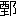

孫子武は
齊人也。
兵法を
以て
呉王闔廬に
見ゆ。
闔廬曰く、
（一）『
子の十三
篇吾盡く
之を
觀る。
（二）以て
小しく
試みに
兵を
勒す
可きか』と。
對へて
曰く、『
可なり』と。
闔廬曰く、『
試みに
婦人を
以てす
可きか』と。
曰く、『
可なり』と。
是に
於て
之を
許す。
宮中の
美女を
出し、百八十
人を
得たり。
孫子分つて二
隊と
爲し、
王の
寵姫二
人を
以て
各 隊長
隊長と
爲し、
皆戟を
持たしむ。
之に
令して
曰く、『
汝、
而の
（三）心と
（四）左右の
手と
背とを
知るか』と。
婦人曰く、『
之を
知る』と。
孫子曰く、『
前は
則ち
心を
視、
左は
左の
手を
視、
右は
右の
手を
視、
後は
即ち
背を
視よ』と。
婦人曰く、『
諾』と。
約束既に
布き、
乃ち
（五） 鉞
鉞を
設け、
即ち
之に
（六）三
令五
申す。
是に
於て
（七）之を
右に
鼓す。
婦人大に
笑ふ。
孫子曰く、『
約束明かならず、
（八）申令熟せざるは、
將の
罪也』と。
復た三
令五
申して
之を
左に
鼓す。
婦人復た
大に
笑ふ。
孫子曰く、『
約束明かならず、
申令熟せざるは、
將の
罪也、
既に
已に
明かにして
而も
法の
如くならざるは、
吏士の
罪也』と。
乃ち
左右の
隊長を
斬らんと
欲す。
呉王、
臺上より
觀、
（（孫子ガ））且に
愛姫を
斬らんとするを
見、
大に
駭き、
趣かに
使をして
令を
下さしめて
曰く、『
寡人已に
將軍の
能く
兵を
用ふるを
知る。
寡人、
此二
姫に
非ざれば、
食、
味を
甘しとせず。
願はくは
斬る
勿かれ』と。
孫子曰く、『
臣、
既に
已に
命を
受けて
將たり。
將は
軍に
在りては
君命をも
受けざる
所有り』と。
遂に
隊長二
人を
斬りて
以て
徇へ、
其次を
用て
隊長と
爲す。
是に
於て
復た
之に
鼓す。
婦人、
（九）左右前後跪起、
皆、
（一〇）規矩繩墨に
中り、
敢て
聲を
出すもの
無し。
是に
於て、
孫子、
使をして
王に
報ぜしめて
曰く、『
兵既に
整齊［＃「整齊」の左に「トトノフ」のルビ］す、
王試みに
下りて
之を
觀る
可し。
唯だ
王の
之を
用ひんと
欲する
所、
水火に
赴くと
雖も
猶ほ
可也』と。
呉王曰く、『
將軍、
（一一）罷休し
（一二）舍に
就け、
寡人、
下りて
觀るを
願はず』と。
孫子曰く、『
王、
徒に
其言を
好んで、
其實を
用ふること
能はず』と。
是に
於て
闔廬、
孫子の
能く
兵を
用ふるを
知り、
卒に
以て
將と
爲す。
西は
彊楚を
破つて
（一三）郢に
入り、
北は
齊・
晉を
威し、
名を
諸
に
顯はす。
孫子與つて
力有り。
孫武既に
死し、
後百
餘歳にして
孫 有
有り。
は
（一四）阿の
間に
生る。
も
亦孫武の
後世の
子孫也。
孫嘗て
 涓
涓と
倶に
兵法を
學ぶ。
涓既に
魏に
事へ、
惠王の
將軍と
爲るを
得て、
自ら
以爲らへく
［＃「以爲らへく」はママ］（一五）能・
孫に
及ばずと、
乃ち
陰に
（（人ヲシテ））孫を
召さしむ。
至る。
涓其の
己に
賢るを
恐れて
之を
（一六）疾み、
則ち
法刑を
以て
其兩足を
斷ちて
之を
（一七）黥し、
（一八）隱れて・
見る
勿からんことを
欲す。
齊の
使者、
（一九）梁に
如く。
孫、
（二〇）刑徒を
以て
陰に
見て
齊の
使に
説く。
齊の
使、
以て
奇と
爲し、
竊に
載せて
與に
齊に
之く。
齊の
將・
田忌、
（二一）善して
之を
（二二）客待す。
忌數齊の
諸公子と
（二三）驅逐重射す。
孫子、
（二四）其馬足の
甚だ
相遠からず
馬に
（二五）上中下の
輩有るを
見る。
是に
於て
孫子、
田忌に
謂つて
曰く、『
君第重射せよ。
臣、
能く
君をして
勝たしめん』と。
田忌之を
信じて
然りとし、
王及び
諸公子と
（二六）千
金を
逐射す。
（二七）質に
臨むに
及んで、
孫子曰く、『
今、
君の
（二八）下駟を
以て
彼の
上駟に
與せよ。
君の
上駟を
取つて
彼の
中駟に
與せよ。
君の
中駟を
取つて
彼の
下駟に
與せよ』と。
既に
馳すること
（二九）三
輩し
畢りて、
（三〇）田忌一たび
勝たずして
再び
勝つ。
卒に
王の千
金を
得たり。
是に
於て
忌、
孫子を
威王に
進む。
威王、
兵法を
問ひ、
遂に
以て
師と
爲せり。
其後、
魏、
趙を
伐つ。
趙、
急なり。
救を
齊に
請ふ。
齊の
威王、
孫を
將とせんと
欲す。
、
辭謝して
曰く、
（三一）『
刑餘の
人、
不可なり』と。
是に
於て
乃ち
田忌を
以て
將となして、
孫子を
師となす。
（（孫子））（三二）輜車の
中に
居り、
坐して
計謀を
爲す。
田忌、
兵を
引いて
趙に
之かんと
欲す。
孫子曰く、『
夫れ
（三三）雜亂紛糾を
解く
者は
（三四）控捲せず、
鬪ひを
救ふ
者は
（三五）搏※［＃「てへん＋戟」、U+64A0、36-11］せず。
（三六）亢を
批ち
虚を
擣き、
（三七）形格き
勢禁ずれば、
則ち
自ら
爲めに
解けん
耳。
今梁・
趙・
相攻む。
輕兵鋭卒、
必ず
外に
竭き、
（三八）老弱内に
罷れん。
君、
兵を
引いて
疾く
大梁に
走き・
（三九）其街路に
據り・
其方に
虚なるを
衝くに
若かず。
彼必ず
趙を
釋てて
自ら
救はん。
是れ
我一
擧して
趙の
圍みを
解きて、
（四〇）弊を
魏に
收むる
也』と。
田忌、
之に
從ふ。
魏、
果して
邯鄲を
去り、
齊と
桂陵に
戰ふ。
（（齊軍））大に
（四一）梁の
軍を
破る。
後十五
年、
魏、
趙と、
韓を
攻む。
韓、
急を
齊に
告ぐ。
齊、
田忌を
將として
往かしむ。
（（田忌））直ちに
大梁に
走く。
魏の
將涓、
之を
聞き、
韓を
去つて
歸れり。
（四二）齊の
軍既に
已に
過ぎて
西す。
孫子、
田忌に
謂つて
曰く、『
彼の
（四三）三
晉の
兵は、
素（四四）悍勇にして
齊を
輕んじ、
齊を
號して
怯と
爲す。
善く
戰ふ
者は
（四五）其勢に
因つて
之を
利導す。
兵法に、百
里にして
（四六）利に
趣く
者は、
上將を
蹶し、五十
里にして
利に
趣く
者は、
（四七）軍、
半ば
至る』と。
（四八）齊の
軍をして
魏の
地に
入り十
萬の
竈を
爲らしめ、
明日は五
萬の
竈を
爲らしめ、
又明日は三
萬の
竈を
爲らしむ。
涓行くこと
三日、
大に
喜んで
曰く、『
我固より
齊の
軍の
怯なるを
知る。
吾が
地に
入りて
三日、
士卒亡ぐる
者、
半ばに
過ぎたり』と。
乃ち
其（四九）歩軍を
棄て、
其（五〇）輕鋭と、
（五一）日を
倍し
行を
并せて
之を
逐へり。
孫子、
其行を
度るに、
暮に
當に
馬陵に
至るべし。
馬陵は
道狹くして
旁ら
（五二）阻隘多く、
兵を
伏す
可し。
乃ち
大樹を
斫り
白げて、
之に
書して
曰く、『
涓、
此樹の
下に
死せん』と。
是に
於て
齊の
軍の
善く
射る
者をして、
（五三）萬弩、
道を
夾んで
伏せしめ、
（五四）期して
曰く、『
暮に
火の
擧がるを
見ば
倶に
發せよ』と。
涓、
果して
夜、
斫木の
下に
至り、
白書を
見、
乃ち
（五五）火を
鑽りて
之を
燭す。
其書を
讀み
未だ
畢らざるに、
齊の
軍の
萬弩倶に
發す。
魏の
軍大に
亂れ、
（五六）相失す。
涓自ら・
智窮まり
兵敗るるを
知り、
乃ち
（五七）自剄して
曰く、『
遂に
（五八）豎子の
名を
成せり』と。
齊、
因つて
勝に
乘じて
盡く
其軍を
破り、
魏の
太子申を
虜にし
（五九）以て
歸る。
孫、
此を
以て、
名天下に
顯はれたり。
（六〇）世、
其兵法を
傳ふ。
呉起は
衞人也。
好んで
兵を
用ふ。
嘗て
曾子に
學び、
魯君に
事ふ。
齊人、
魯を
攻む。
魯、
呉起を
將とせんと
欲す。
呉起、
齊の
女を
取つて
妻と
爲し、
而して
魯、
之を
疑へり。
呉起、
是に
於て、
名を
就さんと
欲し、
遂に
其妻を
殺し、
以て
齊に
與せざるを
明かにす。
魯、
卒に
以て
將となす。
將として
齊を
攻め、
大に
之を
破る。
魯人、
或は
呉起を
（六一）惡して
曰く、『
起の
人と
爲りや
（六二）猜忍の
人也。
其少き
時、
家、千
金を
累ねしが、
（六三）游仕遂げず、
遂に
其家を
破る。
（六四）郷黨之を
笑ふ。
呉起其の
己を
謗りし
者三十
餘人を
殺して、
東、
衞の
（六五）郭門を
出で、
其母と
訣る。
（（己ノ））臂を
齧んで
盟つて
曰く、「
起、
卿相と
爲らずんば、
復た
衞に
入らじ」と。
遂に
曾子に
事ふ。
居ること
之を
頃くして
其母死す。
起、
終に
歸らず。
曾子、
（六六）之を
薄んじて
起と
絶つ。
起乃ち
魯に
之き
兵法を
學び、
以て
（六七）〔魯〕
君に
事ふ。〔魯〕
君之を
疑ふ。
起、
妻を
殺して
以て
將たらんを
求む。
夫れ
魯は
小國にして
戰勝の
名有らば、
則ち
（六八）諸、
魯を
圖らん。
且つ
魯・
衞は
兄弟の
國也、
而るに
君、
起を
用ひば、
則ち
是れ
衞を
棄つるなり』と。
魯君、
之を
疑うて、
呉起を
（六九）謝す。
呉起、
是に
於て
魏の
文の
賢なるを
聞き、
之に
事へんと
欲す。
文、
李克に
問うて
曰く、『
呉起は
何如なる
人ぞ』と。
李克曰く、『
起は
貪にして
色を
好む。
然れども
兵を
用ふるは、
司馬穰苴も
過ぐる
能はざる
也』と。
是に
於て
魏の
文以て
將と
爲す。
秦を
撃ち五
城を
拔けり、
起の・
將たる、
士卒の
最下なる
者と
衣食を
同じうし、
臥するに
席を
設けず、
行くに
（七〇）騎乘せず、
親ら
糧を
裹み
贏ひ、
士卒と
勞苦を
分つ。
卒に
（七一）疽を
病む
者有り。
起爲めに
（七二）之を
吮ふ。
卒の
母之を
聞いて
哭す。
人曰く、『
子は
卒にして
將軍自ら
其疽を
吮ふ。
何ぞ
哭するを
爲す』と。
母曰く、『
然るに
非ず。
往年、
呉公、
其父を
吮ふ。
其父、
戰ひて
（七三）踵を
旋さずして、
遂に
敵に
死せり。
呉公、
今又其子を
吮ふ。
妾、
（七四）其死所を
知らず。
是を
以て
之を
哭するなり』と。
文、
呉起が
善く
兵を
用ひ・
（七五）廉平にして
能を
盡し
士の
心を
得たるを
以て、
乃ち
以て
西河の
守と
爲し、
以て
秦・
韓を
拒がしむ。
魏の
文既に
卒す。
起、
其子武に
事ふ。
武、
西河に
浮びて
下る、
中流にして
顧みて
呉起に
謂つて
曰く、『
美なる
哉乎、
山河の
固め、
此れ
魏國の
寶也』と。
起、
對へて
曰く、『
（（國ノ寶ハ））徳に
在りて
險に
在らず。
昔、三
苗氏は
（七六）洞庭を
左にし、
（七七）彭蠡を
右にせしが、
徳義修らず、
禹之を
滅ぼせり。
（七八）夏桀の
居は
（七九）河濟を
左にし、
（八〇）泰華を
右にし、
（八一）伊闕其南に
在り、
（八二）羊腸其北に
在りしが、
政を
修むること
仁ならず、
湯、
之を
放てり。
（八三）殷紂の
國は
（八四）孟門を
左にし
（八五）太行を
右にし、
常山其北に
在り、
大河其南を
經しが、
政を
修むること
徳ならず、
武王之を
殺せり。
是に
由つて
之を
觀れば、
徳に
在りて
險に
在らず。
若し
君、
徳を
修めずんば
（八六）舟中の
人盡く
敵國たらん』と。
武曰く『
善し』と。
（八七）即ち
呉起を
封じて
西河の
守と
爲す。
甚だ
（八八）聲名有り。
魏、
相を
置き、
（八九）田文を
相とせり。
呉起悦ばず。
田文に
謂つて
曰く
（九〇）『
請ふ
子と
功を
論ぜん、
可ならんか』と。
田文曰く、『
可なり』と。
起曰く、『三
軍に
將として
士卒をして
死を
樂しましめ、
敵國をして
敢て
謀らざらしむるは、
子、
起に
孰れぞ』と。
文曰く、『
子に
如かず』と。
起曰く、『百
官を
治め、
萬民を
親しましめ、
（九一）府庫を
實たすは、
子、
起に
孰れぞ』と。
文曰く、『
子に
如かず』と。
起曰く、『
西河を
守りて、
秦の
兵敢て
東に
郷はず、
韓・
趙・
（九二）賓從するは、
子、
起に
孰れぞ』と。
文曰く、『
子に
如かず』と、
起曰く、『
此れ
子、
三つの
者、
皆吾が
下に
出でて、
位、
吾が
上に
加はるは、
何ぞや』と。
文曰く、『
主少うして
國疑ひ、
大臣未だ
附かず、百
姓信ぜず、
是の
時に
方つて
之を
子に
屬せん
乎、
之を
我に
屬せん
乎』と。
起、
默然たること
良久しうして
曰く、『
之を
子に
屬せん』と。
文曰く、『
此れ
乃ち
吾が・
子の
上に
居る
所以也』と。
呉起乃ち
自ら・
田文に
如かざるを
知る。
田文既に
死して、
公叔、
相と
爲る。
（（公叔））（九三）魏の
公主に
（九四）尚し、
而して
呉起を
害む。
公叔の
僕曰く、『
起は
（九五）去り
易し』と、
公叔曰く、『
奈何せん』と。
其僕曰く、『
呉起、
人と
爲り、
（九六）節廉にして
自ら
（九七）名を
喜む。
君、
因つて
先づ
武に
言つて
曰へ、「
夫れ
呉起は
賢人也。
而して
の
國は
小にして、
又彊秦と
（九八）界を
壤す。
臣竊に
起の
（九九）留心無きを
恐る」と。
武即ち
曰はん、「
奈何せん」と。
君、
因つて
武に
謂つて
曰へ、「
試みに
（一〇〇）延くに
公主を
以てせよ。
起、
留心有らば、
則ち
必ず
之を
受けん、
留心無くば
則ち
必ず
辭せん。
（一〇一）此を
以て
之を
卜せよ」と。
君因つて
呉起を
召して
（一〇二）與に
歸り、
即ち
（一〇三）公主をして
怒つて
君を
輕んぜしめよ。
呉起、
公主の・
君を
賤しむを
見ば、
則ち
必ず
辭せん』と。
是に
於て
呉起、
公主の・
魏の
相を
賤しむを
見、
（一〇四）果して
魏の
武に
辭す。
武之を
疑うて
信ぜず。
呉起、
罪を
得るを
懼れ、
遂に
去り、
即ち
楚に
之く。
楚の
悼王、
素より
起の
賢なるを
聞く。
至れば
則ち
楚に
相とす。
（（呉起））法を
明かにし
令を
審かにし、
不急の
官を
捐て、
（一〇五）公族疏遠の
者を
廢し、
以て
戰鬪の
士を
撫養す。
要は
兵を
彊くし
（一〇六）馳説の
（一〇七）從横を
言ふ
者を
破るに
在るなり。
是に
於て
南は百
越を
平らげ、
北は
陳蔡を
并せ
（一〇八）三
晉を
却け、
西は
秦を
伐つ。
諸、
楚の
彊きを
患ふ。
（一〇九）故の
楚の
貴戚、
盡く
呉起を
害せんと
欲す。
悼王死するに
及んで、
宗室大臣、
亂を
作して
呉起を
攻む。
呉起、
走つて
王の
尸に
之きて
之に
伏す。
起を
撃つの
徒、
呉起を
射刺するに
因つて、
并せて
悼王に
中つ。
悼王既に
葬られて、
太子立つ。
乃ち
（一一〇）令尹をして
盡く
呉起を
射て
并せて
王の
尸に
中てし
者を
誅せしむ。
起を
射るに
坐して、
（一一一）宗を
夷らげられて
死せし
者七十
餘家。
太史公曰く、
世俗、
稱する
所の
（一一二）師旅は、
皆、
孫子十三
篇・
呉起の
兵法を
道ふ。
世多く
有り、
故に
論ぜず。
其行事と
施設する
所の
者とを
論ず。
（一一三）語に
曰く、『
能く
之を
行ふ
者は、
未だ
必ずしも
能く
言はず、
能く
之を
言ふ
者は、
未だ
必ずしも
能く
行はず』と。
孫子、
涓を
（一一四）籌策すること
明かなり。
然れども
（一一五）蚤く
患を
刑せらるるに
救ふ※
［＃こと、44-1］能はず。
呉起、
武に
説くに
形勢の・
徳に
如かざるを
以てす。
然れども
之を
楚に
行ふや、
（一一六）刻暴少恩を
以て
其躯を
亡ふ。
悲しい
夫。
【一】子の十三篇、足下の著はしたる兵書十三篇。即ち今日傳はる所の孫子十三篇なり。
【二】之を言ふことは易く、之を行ふことは難し、故に之を試みんと欲する也。
【三】心。胸也。
【四】左右手背。左右の手と背。
【五】
鉞。罪人を斬るに用ふるまさかり。
【六】三令五申。三度號令し五度言ひ聞かす。
【七】之を右に鼓す。太鼓を鳴らして、右に向かしむる也。
【八】申令。幾度も繰返す號令。
【九】左右前後跪起。左と云へば左、右と令せば右、前に後に、起つたり坐つたり、
【一〇】規矩繩墨。規はぶんまはし、矩は曲尺、繩墨は墨なは、皆大工の使ふ道具、此處にては法又は規則などの意。
【一一】罷休。休息。
【一二】舍。宿舍。
【一三】郢。楚の都。
【一四】阿・。竝に齊の地名。
【一五】能。材能。
【一六】疾。嫉と通ず。
【一七】黥。入墨する。
【一八】彼が隱れて人に逢はぬやうにせんとする也。
【一九】梁。魏の都。
【二〇】刑徒。刑を受けたもの。
【二一】善す。心に其の人を悦ぶ也。
【二二】客待。賓客として待遇す。
【二三】驅逐重射。物を賭けて馬を驅る、即ち一種の競馬也。
【二四】馬足甚だ遠からずとは、馬の速力に大なる等差無きなり。
【二五】上中下の輩。馬に上等中等下等の三種あるをいふ。
【二六】千金を逐射す。千金を賭けて競馬をする也。
【二七】質に臨むに及んで。質は對也、いよいよ競馬をするに方りて也。
【二八】駟。車を引く馬四頭。上中下。馬の等級なり。
【二九】三輩し畢り。三組とも驅けて了つたとの意。
【三〇】我の下駟は彼の上駟に及ばず、故に一たび勝たず。彼の中駟は我の上駟に及ばず、彼の下駟は我の中駟に及ばず、故に再び勝つ。
【三一】刑餘。刑を被つたことのある人。
【三二】輜車。輜重車。
【三三】雜亂紛糾。絲の縺れ亂れたるをいふ。
【三四】控捲。拳にて撃つ也。
【三五】搏※［＃「てへん＋戟」、U+64A0、36-註【三五】］。手を以て撃つ也。
【三六】亢。急處をいふ。虚。空虚の處をいふ。
【三七】形格き勢禁ず。形勢不利となること。
【三八】老弱。老者幼者也。罷。疲なり。
【三九】其街路に據るは、所謂亢を批つ也。其方に虚なるを衝くは、所謂虚を擣く也。
【四〇】弊を魏に收むる。魏を疲弊させる也。
【四一】梁。魏は大梁に都して居る故、又梁ともいふ。
【四二】
已に過ぎて西すとは、
涓歸り救ひ、齊の師の未だ至らざるを邀へんと欲せしが、齊の軍今已に過ぎて西のかた魏の地に入りし也、故に涓、利を視て疾く趨る也。
【四三】三晉。韓趙魏は共に晉の卿たりしを、三家共に晉を亡ぼして其地を分ちし故、此の三國を三晉といふ。
【四四】悍勇。慓悍勇猛なり。
【四五】其自然の勢に因つて之を我が都合のよきやうにうまく導く也。
【四六】利に趣く。戰利を爭うて急馳する也。蹶。戰死せしむる也。
【四七】軍半ば至る。利を逐ふに急である爲、軍を整へて進む能はず、半數だけが先づ敵に赴くをいふ。
【四八】齊の軍が魏の地に入りて後、日日に減少したるやうに見せかくる也。
【四九】歩軍。歩兵なり。
【五〇】輕鋭。輕裝して勢鋭き騎兵。
【五一】晝夜兼行して追ふことをいふ。
【五二】阻隘。險阻。
【五三】萬弩。萬の石弓。
【五四】期。約束する也。
【五五】火を鑽り。燧石を打つて火を出す。
【五六】相失す。散亂する也。
【五七】自剄。自ら首を切る也。
【五八】豎子。罵りていふ辭。小僧といふが如し。彼の小僧に功名を成さしむることとなれりとの意。
【五九】以て歸る。引連れて歸る。
【六〇】
世其兵法を傳ふ。孫
の兵法の書、世に傳はれりとの意。
【六一】惡。惡言する也。そしる。
【六二】猜忍。猜疑殘忍の人。
【六三】游仕。四方に遊び仕官を求むること。
【六四】郷黨。故郷在所のもの。
【六五】郭門。城門。
【六六】之を薄んじ。其行を薄情とする也。絶。破門せし也。
【六七】魯人が之を惡するは、必ず之を君に惡する也。宜しく魯君の字を用ふべからず。二つの「魯」の字は衍文なり。
【六八】諸
、魯を忌みて之を伐たんとすべし。
【六九】謝。謝絶する也。
【七〇】騎乘。騎は馬に騎る也。乘は車に乘る也。
【七一】疽。癰の一種。
【七二】之を吮ふ。疽の膿を吸ひ出すこと。
【七三】踵を旋さず。幾程もなく也。
【七四】何時何處で死ぬか分らぬ也。
【七五】廉平。廉直公平。能を盡す。材能ある［＃「材能ある」はママ］人に十分働かする也。
【七六】洞庭。湖の名。
【七七】彭蠡。險阻の地。
【七八】夏桀。夏の桀王。
【七九】河濟。二つの川の名。
【八〇】泰華。二つの山の名。
【八一】伊闕。伊水に沿へる險阻。
【八二】羊腸。阪の名。
【八三】殷紂。殷の紂王。
【八四】孟門。山の名。
【八五】太行。山の名。
【八六】今同舟し居る者も皆敵國の人とならんとの意。
【八七】呉起、文
のとき、既に西河の守と爲る。武
のとき、「即ち封じて西河の守と爲す」と曰へるは、甚だ疑ふべし。又、西河の守と爲すことは、封ずといふべからず。案ずるに原文の「即封」の二字は衍文にして、「呉起、西河の守たるや、甚だ聲名有り」と讀むべきならん。
【八八】聲名。評判也。
【八九】田文。齊の孟嘗君田文にあらず。
【九〇】吾、貴公と、功勞の比較を爲さんと思ふが、差支無しやとの意。
【九一】國を富ますこと。
【九二】賓從。服從也。
【九三】魏の公主。魏君の女。
【九四】尚。君の女を臣下に配するを尚と云ふ。
【九五】去り易し。退け易しの意。
【九六】節廉。節操ありて廉潔なること。
【九七】名を喜む。名譽を好む也。
【九八】界を壤す。界を接するの意。
【九九】留心。魏に留まらんとする意志。
【一〇〇】公主を呉起に尚せんといふ也。
【一〇一】君、此を以て呉起が魏に留まる意志ありや否やを判斷したまへ。
【一〇二】與に歸り。與に朝より歸る也。
【一〇三】公主。公叔の妻。
【一〇四】果して。公叔の僕の言の如く也。
【一〇五】公族云云。公族にして比較的疏遠なる者の在官者を廢す。
【一〇六】馳説。遊説者。
【一〇七】從横。合從連衡。
【一〇八】三晉。韓趙魏をいふ。
【一〇九】故の楚の貴戚。前に廢官された公族疏遠の者。
【一一〇】令尹。楚の宰相。
【一一一】宗を夷ぐ。一族を夷滅する也。
【一一二】師旅。軍旅の事。
【一一三】語。古語。
【一一四】籌策。計略なり。
【一一五】足を斬らるるが如き禍を早く豫防すること能はず。
【一一六】刻暴。刻薄殘暴。少恩。恩情を缺く也。
孫子武者。齊人也。以
二兵法
一見
レ於
二呉王闔廬
一。闔廬曰。子之十三篇。吾盡觀
レ之矣。可
二以小試勒
一レ兵乎。對曰可。闔廬曰。可
三試以
二婦人
一乎。曰可。於
レ是許
レ之。出
二宮中美女
一得
二百八十人
一。孫子分爲
二二隊
一。以
二王之寵姫二人
一各爲
二隊長
一。皆令
レ持
レ戟。令
レ之曰。汝知
三而心與
二左右手背
一乎。婦人曰。知
レ之。孫子曰。前則視
レ心。左視
二左手
一。右視
二右手
一。後即視
レ背。婦人曰。諾。約束既布。乃設
二鉞
一。即三
三令五
二申之
一。於
レ是鼓
二之右
一。婦人大笑。孫子曰。約束不
レ明。申令不
レ熟。將之罪也。復三令五申而鼓
二之左
一。婦人復大笑。孫子曰。約束不
レ明。申令不
レ熟。將之罪也。既已明而不
レ如
レ法者。吏士之罪也。乃欲
レ斬
二左右隊長
一。呉王從
二臺上
一觀。見
レ且
レ斬
二愛姫
一。大駭。趣使
二使下
一レ令曰。寡人已知
二將軍能用
一レ兵矣。寡人非
二此二姫
一。食不
レ甘
レ味。願勿
レ斬也。孫子曰。臣既已受
レ命爲
レ將。將在
レ軍。君命有
レ所
レ不
レ受。遂斬
二隊長二人
一以徇。用
二其次
一爲
二隊長
一。於
レ是復鼓
レ之。婦人左右前後跪起皆中
二規矩繩墨
一。無
二敢出
一レ聲。於
レ是孫子使
二使報
一レ王曰。兵既整齊。王可
二試下觀
一レ之。唯王所
レ欲
レ用
レ之。雖
レ赴
二水火
一猶可也。呉王曰。將軍罷休就
レ舍。寡人不
レ願
二下觀
一。孫子曰。王徒好
二其言
一。不
レ能
レ用
二其實
一。於
レ是闔廬知
二孫子能用
一レ兵。卒以爲
レ將。西破
二彊楚
一。入
レ郢。北威
二齊晉
一。顯
二名諸侯
一。孫子與有
レ力焉。孫武既死。後百餘歳。有
二孫
一。
生
二阿之間
一。
亦孫武之後世子孫也。孫
嘗與
二涓
一倶學
二兵法
一。
涓既事
レ魏。得
レ爲
二惠王將軍
一。而自以爲能不
レ及
二孫
一。乃陰使
レ召
二孫
一。
至。
涓恐
二其賢
一レ於
レ己疾
レ之。則以
二法刑
一斷
二其兩足
一而黥
レ之。欲
二隱勿
一レ見。齊使者如
レ梁。孫
以
二刑徒
一。陰見説
二齊使
一。齊使以爲
レ奇。竊載與之
レ齊。齊將田忌善而客
二待之
一。忌數與
二齊諸公子
一馳逐重射。孫子見
下其馬足不
二甚相遠
一。馬有
中上中下輩
上。於
レ是孫子謂
二田忌
一曰。君第重射。臣能令
二君勝
一。田忌信
二然之
一。與
二王及諸公子
一逐
二射千金
一。及
レ臨
レ質。孫子曰。今以
二君之下駟
一。與
二彼上駟
一。取
二君上駟
一。與
二彼中駟
一。取
二君中駟
一。與
二彼下駟
一。既馳三輩畢。而田忌一不
レ勝而再勝。卒得
二王千金
一。於
レ是忌進
三孫子於
二威王
一。威王問
二兵法
一。遂以爲
レ師。其後魏伐
レ趙。趙急。請
二救於
一レ齊。齊威王欲
レ將
二孫
一。
辭謝曰。刑餘之人。不可。於
レ是乃以
二田忌
一爲
レ將。而孫子爲
レ師。居
二輜車中
一。坐爲
二計謀
一。田忌欲
二引
レ兵之
一レ趙。孫子曰。夫解
二雜亂紛糾
一者不
二控捲
一。救
レ
者不
二搏※
［＃「てへん＋卓＋戈」、U+2ABAE、10-16］一。批
レ亢擣
レ虚。形格勢禁。則自爲解耳。今梁趙相攻。輕兵鋭卒。必竭
レ於
レ外。老弱罷
レ於
レ内。君不
レ若
下引
レ兵疾走
二大梁
一。據
二其街路
一。衝
中其方虚
上。彼必釋
レ趙而自救。是我一擧解
二趙之圍
一。而收
二弊於
一レ魏也。田忌從
レ之。魏果去
二邯鄲
一。與
レ齊戰
レ於
二桂陵
一。大破
二梁軍
一。後十五年。魏與
レ趙攻
レ韓。韓告
二急於
一レ齊。齊使
二田忌將而往
一。直走
二大梁
一。魏將
涓聞
レ之。去
レ韓而歸。齊軍既已過而西矣。孫子謂
二田忌
一曰。彼三晉之兵。素悍勇而輕
レ齊。齊號爲
レ怯。善戰者。因
二其勢
一而利
二導之
一。兵法百里而趣
レ利者。蹶
二上將
一。五十里而趣
レ利者。軍半至。使
下齊軍入
二魏地
一爲
中十萬竈
上。明日爲
二五萬竈
一。又明日爲
二三萬竈
一。
涓行三日。大喜曰。我固知
二齊軍怯
一。入
二吾地
一三日。士卒亡者過
レ半矣。乃棄
二其歩軍
一。與
二其輕鋭
一倍
レ日並
レ行逐
レ之。孫子度
二其行
一。暮當
レ至
二馬陵
一。馬陵道狹。而旁多
二阻隘
一。可
レ伏
レ兵。乃斫
二大樹
一。白而書
レ之曰。
涓死
レ于
二此樹之下
一。於
レ是令
二齊軍善射者。萬弩夾
レ道而伏
一。期曰。暮見
二火擧
一而倶發。
涓果夜至
二斫木下
一。見
二白書
一。乃鑽
レ火燭
レ之。讀
二其書
一未
レ畢齊軍萬弩倶發。魏軍大亂。相失。
涓自知
二智窮兵敗
一。乃自剄曰。遂成
二豎子之名
一。齊因乘
レ勝。盡破
二其軍
一。虜
二魏太子申
一以歸。孫子以
レ此名顯
二天下
一。世傳
二其兵法
一。
呉起者。衞人也。好用
レ兵。嘗學
レ於
二曾子
一。事
二魯君
一。齊人攻
レ魯。魯欲
レ將
二呉起
一。呉起取
二齊女
一爲
レ妻。而魯疑
レ之。呉起於
レ是欲
レ就
レ名。遂殺
二其妻
一。以明
レ不
レ與
レ齊也。魯卒以爲
レ將。將而攻
レ齊。大破
レ之。魯人或惡
二呉起
一曰。起之爲
レ人。猜忍人也。其少時。家累
二千金
一。游仕不
レ遂。遂破
二其家
一。郷黨笑
レ之。呉起殺
二其謗
レ己者三十餘人
一。而東出
二衞郭門
一。與
二其母
一訣。齧
レ臂而盟曰。起不
レ爲
二卿相
一。不
二復入
一レ衞。遂事
二曾子
一。居頃
レ之。其母死。起終不
レ歸。曾子薄
レ之。而與
レ起絶。起乃之
レ魯學
二兵法
一。以事
二魯君
一。魯君疑
レ之。起殺
レ妻以求
レ將。夫魯小國而有
二戰勝之名
一。則諸侯圖
レ魯矣。且魯衞兄弟之國也。而君用
レ起。則是棄
レ衞。魯君疑
レ之。謝
二呉起
一。呉起於
レ是聞
二魏文侯賢
一。欲
レ事
レ之。文侯問
二李克
一曰。呉起何如人哉。李克曰。起貪而好
レ色。然用
レ兵。司馬穰苴不
レ能
レ過也。於
レ是魏文侯以爲
レ將。撃
レ秦拔
二五城
一。起之爲
レ將。與
二士卒最下者
一同
二衣食
一。臥不
レ設
レ席。行不
二騎乘
一。親裹
二贏糧
一。與
二士卒
一分
二勞苦
一。卒有
二病
レ疽者
一。起爲吮
レ之。卒母聞而哭
レ之。人曰。子。卒也。而將軍自吮
二其疽
一。何哭爲。母曰。非
レ然也。往年呉公吮
二其父
一。其父戰不
レ旋
レ踵。遂死
レ於
レ敵。呉公今又吮
二其子
一。妾不
レ知
二其死所
一矣。是以哭
レ之。文侯以
三呉起善用
レ兵。廉平盡
レ能得
二士心
一。乃以爲
二西河守
一。以拒
二秦韓
一。魏文侯既卒。起事
二其子武侯
一。武侯浮
二西河
一而下。中流顧而謂
二呉起
一曰。美哉乎山河之固。此魏國之寶也。起對曰。在
レ徳不
レ在
レ險。昔三苗氏左
二洞庭
一。右
二彭蠡
一。徳義不
レ修。禹滅
レ之。夏桀之居。左
二河濟
一。右
二泰華
一。伊闕在
二其南
一。羊腸在
二其北
一。修
レ政不仁。湯放
レ之。殷紂之國。左
二孟門
一。右
二太行
一。常山在
二其北
一。太河經
二其南
一。修
レ政不徳。武王殺
レ之。由
レ此觀
レ之。在
レ徳不
レ在
レ險。若君不
レ修
レ徳。舟中之人。盡爲
二敵國
一也。武侯曰。善。即封
二呉起
一爲
二西河守
一。甚有
二聲名
一。魏置
レ相。相
二田文
一。呉起不
レ悦。謂
二田文
一曰。請與
レ子論
レ功。可乎。田文曰。可。起曰。將
二三軍
一使
三士卒樂
レ死。敵國不
二敢謀
一。子孰
二與起
一。文曰。不
レ如
レ子。起曰。治
二百官
一。親
二萬民
一。實
二府庫
一。子孰
二與起
一。文曰。不
レ如
レ子。起曰。守
二西河
一。而秦兵不
二敢東郷
一。韓趙賓從。子孰
二與起
一。文曰。不
レ如
レ子。起曰。此三子者皆出
二吾下
一。而位加
二吾上
一。何也。文曰。主少國疑。大臣未
レ附。百姓不
レ信。方
二是之時
一。屬
二之於
一レ子乎。屬
二之於
一レ我乎。起默然良久曰。屬
二之子
一矣。文曰。此乃吾所
レ以
レ居
二子之上
一也。呉起乃自知
レ弗
レ如
二田文
一。田文既死。公叔爲
レ相。尚
二魏公主
一。而害
二呉起
一。公叔之僕曰。起易
レ去也。公叔曰。奈何。其僕曰。呉起爲
レ人。節廉而自喜
レ名也。君因先與
二武侯
一言曰。夫呉起。賢人也。而侯之國小。又與
二彊秦
一壤
レ界。臣竊恐
三起之無
二留心
一也。武侯即曰。奈何。君因謂
二武侯
一曰。試延以
二公主
一。起有
二留心
一。則必受
レ之。無
二留心
一。則必辭矣。以
レ此卜
レ之。君因召
二呉起
一而與歸。即令
二公主怒而輕
一レ君。呉起見
二公主之賤
一レ君也。則必辭。於
レ是呉起見
三公主之賤
二魏相
一。果辭
二魏武侯
一。武侯疑
レ之而弗
レ信也。呉起懼
レ得
レ罪。遂去。即之
レ楚。楚悼王素聞
二起賢
一。至則相
レ楚。明
レ法審
レ令。捐
二不急之官
一。廢
二公族疏遠者
一。以撫
二養戰鬪之士
一。要在
下彊
レ兵破
中馳説之言
二從横
一者
上。於
レ是南平
二百越
一。北并
二陳蔡
一。却
二三晉
一。西伐
レ秦。諸侯患
二楚之彊
一。故楚之貴戚盡欲
レ害
二呉起
一。及
二悼王死
一。宗室大臣作
レ亂而攻
二呉起
一。呉起走之
二王尸
一而伏
レ之。撃
レ起之徒。因
レ射
二刺呉起
一。并中
二悼王
一。悼王既葬。太子立。乃使
下令尹盡誅
中射
二呉起
一而并中
二王尸
一者
上。坐
レ射
レ起而夷
レ宗死者。七十餘家。
太史公曰。世俗所
レ稱師旅。皆道
二孫子十三篇。呉起兵法
一。世多有。故弗
レ論。論
下其行事所
二施設
一者
上。語曰。能行
レ之者未
二必能言
一。能言
レ之者未
二必能行
一。孫子籌
二策
涓
一。明矣。然不
レ能
三蚤救
二患於
一レ被
レ刑。呉起説
二武侯
一以
二形勢不
一レ如
レ徳。然行
二之於
一レ楚。以
二刻暴少
一レ恩亡
二其躯
一。悲夫。